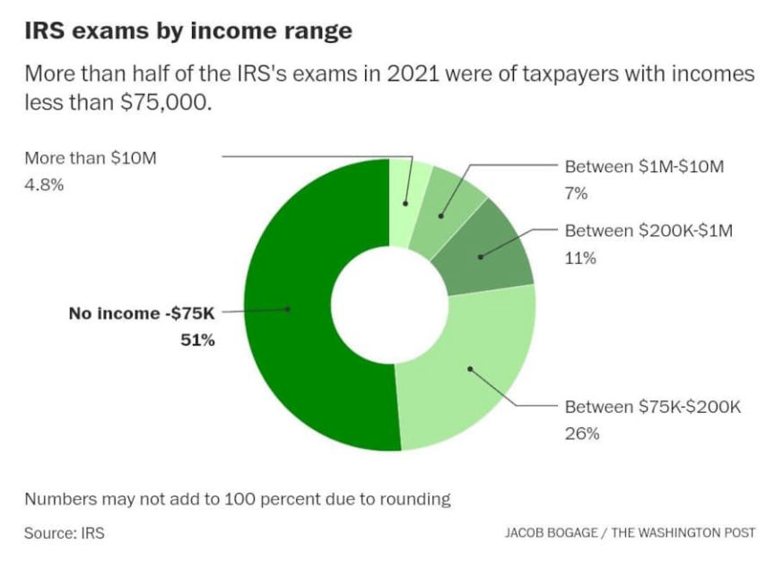
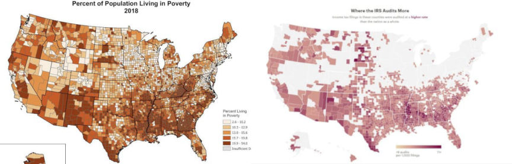
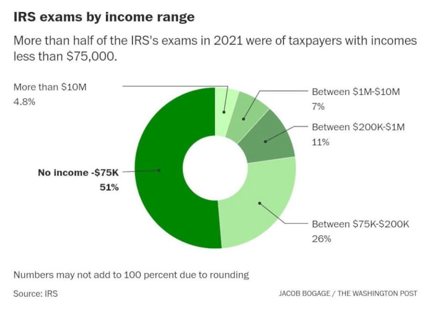
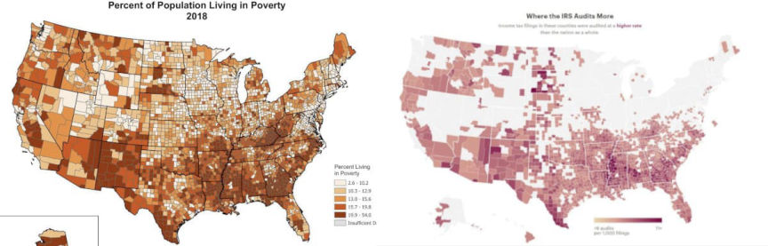

IRS Asking for Another John Doe Summons in sFOX Probe
The IRS filed a petition in the Southern District of New York to serve a John Doe summons to a bank that offered cash deposit accounts to sFOX users.

On August 15, 2022, a court in the Central District of California authorized the Internal Revenue Service’s John Doe summons against the cryptocurrency prime dealer sFOX. The court found that it was likely that sFOX users might not be in compliance with tax laws (underpaying taxes). The IRS is searching for information on U.S. taxpayers who have conducted transactions totaling $20,000 on the platform.
In a concurrent petition filed in the Southern District of New York, the IRS is asking the court to authorize another John Doe summons against M.Y. Safra Bank, FSB (M.Y. Safra). In 2019, the bank partnered with sFOX to provide cash deposit accounts to registered sFOX users.

“The John Doe summons remains a highly valuable enforcement tool that the U.S. government will use again and again to catch tax cheats and this is yet one more example of that,” IRS Commissioner Chuck Rettig said.
Previously: Court Authorizes IRS Fishing Trip Against Crypto Prime Dealer
Here is a Monero-related PNG dump (they are all jpgs): Monero pngs

Income brackets audited by the IRS
On August 15, 2022, a court in the Central District of California authorized the Internal Revenue Service’s John Doe summons against the cryptocurrency prime dealer sFOX. The court found that it was likely that sFOX users might not be in compliance with tax laws (underpaying taxes). The IRS is searching for information on U.S. taxpayers who have conducted transactions totaling $20,000 on the platform.
In a concurrent petition filed in the Southern District of New York, the IRS is asking the court to authorize another John Doe summons against M.Y. Safra Bank, FSB (M.Y. Safra). In 2019, the bank partnered with sFOX to provide cash deposit accounts to registered sFOX users.

Where the IRS audits v. poverty levels
“The John Doe summons remains a highly valuable enforcement tool that the U.S. government will use again and again to catch tax cheats and this is yet one more example of that,” IRS Commissioner Chuck Rettig said.
Previously: Court Authorizes IRS Fishing Trip Against Crypto Prime Dealer
Here is a Monero-related PNG dump (they are all jpgs): Monero pngs